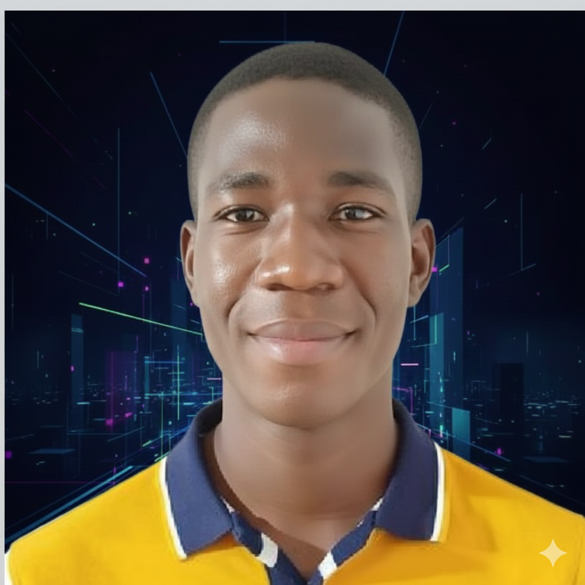

Développeur Full-Stack passionné, j’architecture, conçois et déploie des applications web robustes en maîtrisant les technologies essentielles du développement moderne. Du front-end (HTML5, CSS3, JavaScript, React) au back-end (Node.js, Express, Laravel), en passant par les bases de données SQL/NoSQL, j’assure une approche complète, optimisée et orientée performance. Animé par la passion du code et de la résolution de problèmes, je transforme chaque projet en une solution fiable, scalable et durable.
